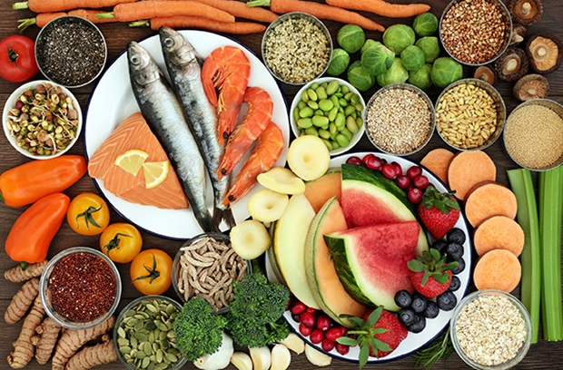
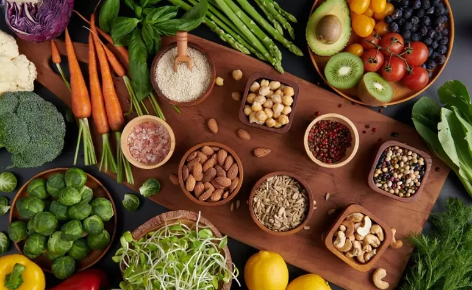
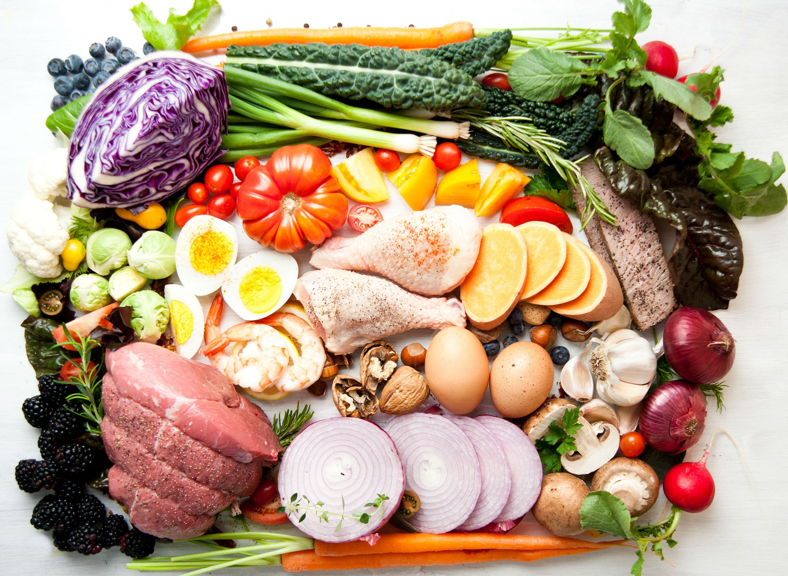

Dieta të Sugjeruara

Dieta Mesdhetare
Një dietë e pasur me vaj ulliri, perime dhe peshk, ideale për një zemër të shëndetshme.
Mëso më shumë

Dieta Vegane
Dietë pa produkte shtazore, ideale për ata që duan një stil jete të gjelbër.
Mëso më shumë

Dieta Paleolitike
Ushqime natyrale siç i konsumonin të parët tanë, ideale për shëndetin e përgjithshëm.
Mëso më shumëKëshilla Ushqimore
- Konsumo më shumë fruta dhe perime.
- Shmang pijet e gazuara dhe të sheqerosura.
- Pi të paktën 8 gota ujë në ditë.
- Zëvendëso miellin e bardhë me miell integral.
Tabela e Ushqimeve të Shëndetshme
| Ushqimi | Kategoria | Përfitimet Kryesore |
|---|---|---|
| Avokado | Fruta | Pasur me yndyrna të shëndetshme dhe vitamina. |
| Quinoa | Drithëra | Burim i shkëlqyer i proteinave bimore. |
| Boronica | Fruta | Antioxidantë për shëndetin e trurit. |
| Spinaqi | Perime | Pasur me hekur dhe fibra. |